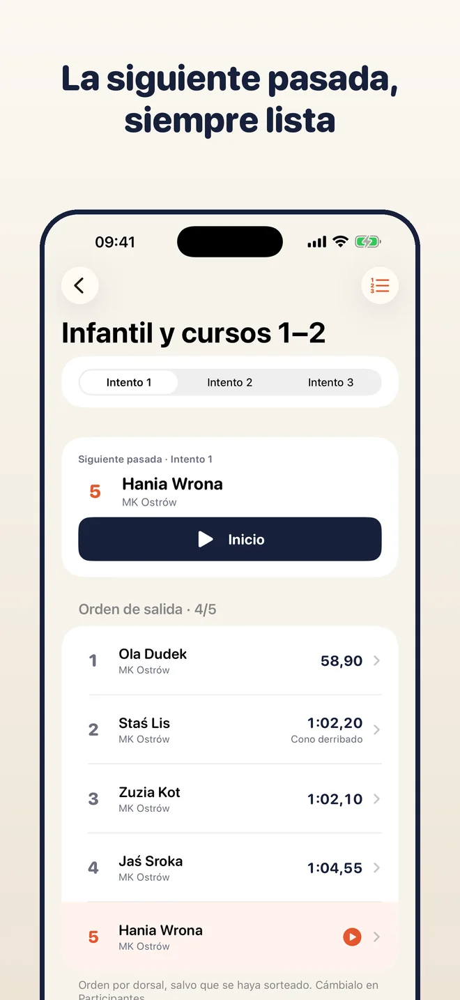
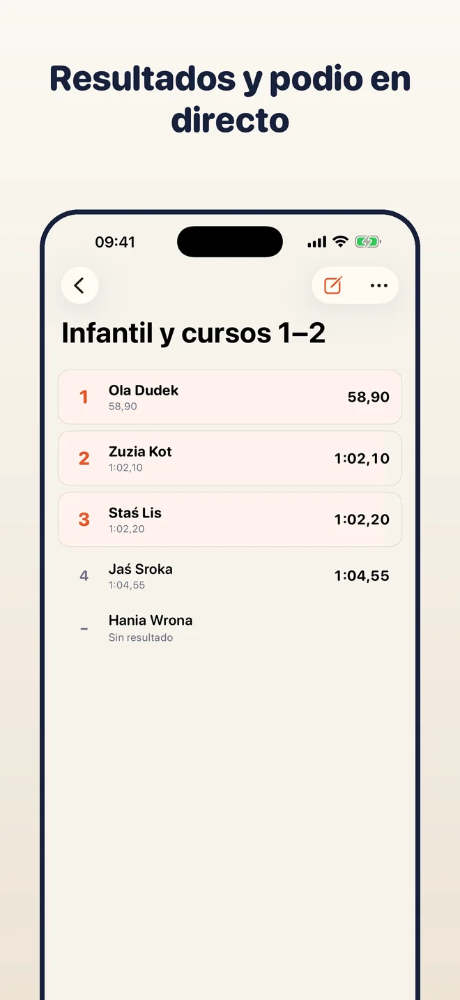
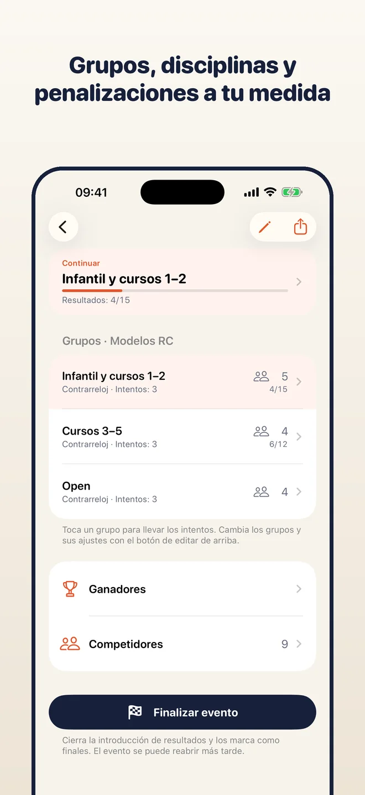
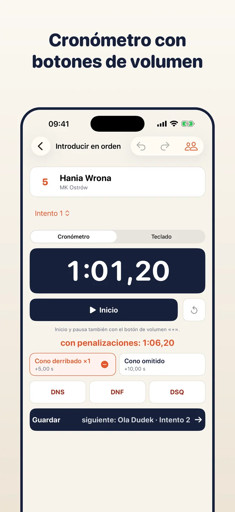
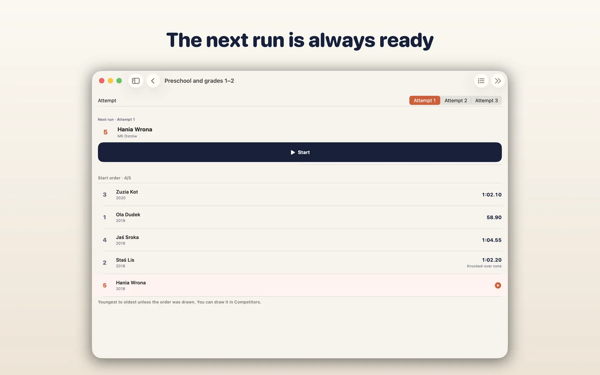
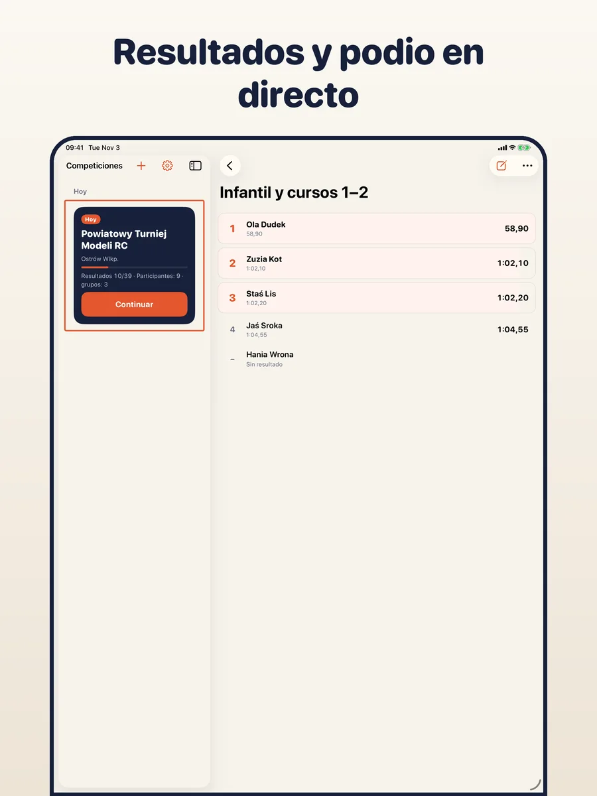
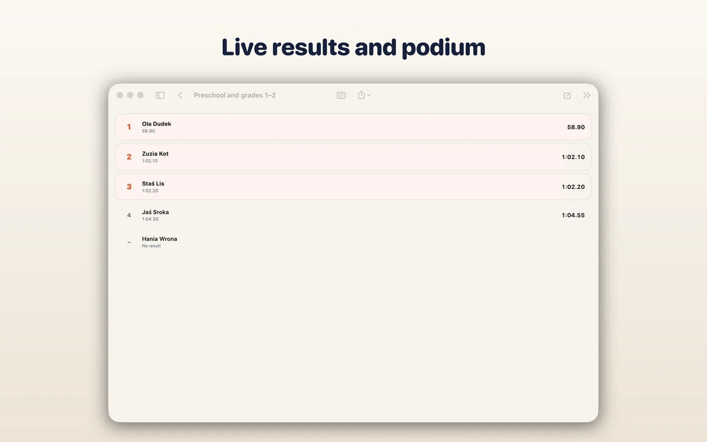
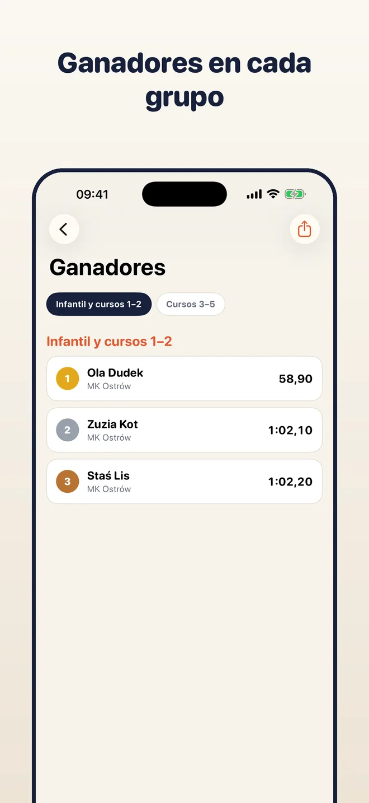
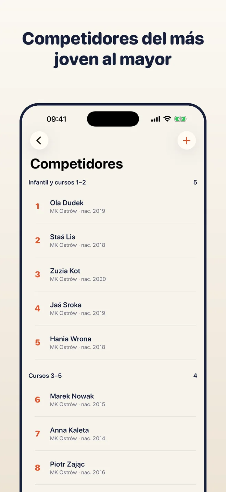

Crea grupos, añade participantes, cronometra cada intento e introduce los resultados. Puestos, empates y clasificación por equipos y general se actualizan solos, listos para un PDF, un CSV o una imagen del podio. Todo se queda en tu dispositivo.
iPhone · iPad · Mac

Elige un tipo de competición y añade grupos, como categorías de edad u Open. Cada grupo tiene sus intentos, su forma de contar y sus penalizaciones.

La app muestra quién sale después. Pon en marcha el cronómetro, añade una penalización con un toque y el tiempo pasa directo al resultado.

Clasificación, empates y ganadores siempre al día. Exporta un PDF, un CSV, una imagen del podio para redes sociales o una copia de todo el evento.
Mejor intento, suma de los mejores, media, N de M rondas, notas de jurado, sectores, etapas. Ejemplos listos y reglas propias.
Modelos RC, pesca, deporte de bomberos y más. Una persona puede competir en varios grupos, por ejemplo en el suyo y en Open.
Inicio y pausa con un toque o con el botón de subir volumen. El tiempo pasa al resultado y las penalizaciones son botones debajo.
El dorsal fija el orden en el grupo. Sortéalo o arrastra para cambiarlo; el siguiente participante siempre está a la vista.
Puestos, empates y resultados incompletos se calculan al introducirlos. Ganadores por grupo, clasificación por equipos y general.
Cierra el evento para marcar los resultados como finales y reábrelo si hay que corregir algo.
Comparte una hoja de resultados, una hoja de cálculo, una imagen del podio o una copia .tallyboard de todo el evento.
Sin cuenta, sin anuncios y sin servidor nuestro. Los resultados se quedan en tu dispositivo, o en tu iCloud si activas la sincronización.
Una app, una compra: gratis en los tres. El iPhone cronometra los intentos y el Mac o el iPad muestran todo el evento. Con la sincronización de iCloud (opcional) comparten los mismos datos.





Tallyboard no tiene muro de pago ni límites. Si te ayuda, puedes apoyar su desarrollo con una propina opcional.
Las propinas son compras únicas gestionadas por Apple. La app nunca ve tus datos de pago.
Las reglas listas son ejemplos basados en reglamentos habituales. No sustituyen el reglamento oficial de tu competición; el organizador es responsable de las reglas y de los resultados finales.
No. No hay cuentas ni anuncios.
En tu dispositivo. Si activas la sincronización de iCloud, también en tu iCloud privado. No tenemos servidor ni acceso a tus datos.
Para cualquiera en la que los participantes salgan por turnos y el puesto dependa del tiempo, los puntos o las notas: RC, pesca, deporte de bomberos, concursos con jurado, autocross y más. Si las reglas listas no encajan, crea las tuyas.
Sí. Activa la sincronización de iCloud en Ajustes o pasa un evento con un archivo de copia .tallyboard.
Polaco, inglés, alemán, español e italiano.
Gratis para iPhone, iPad y Mac. Sin cuenta.
Descargar en la App Store